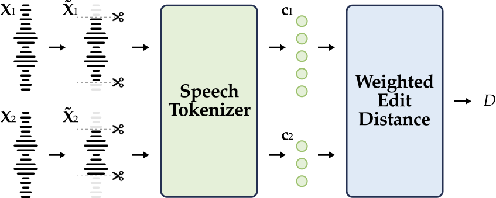

Measuring Prosody Diversity in Zero-Shot TTS: A New Metric, Benchmark, and Exploration
Contents
DS-WED Metric

We reinterprete the weighted edit distance as the minimum perceptually prosodic modifications needed to transform one speech into another at the discrete level.
Samples from Prosody Diversity Benchmark
Samples are from LibriSpeech dataset.
| English Text | Speaker Prompt | MaskGCT | E2 TTS | F5-TTS | PALLE (estimated duration) | PALLE (groud-truth duration) |
|---|---|---|---|---|---|---|
| then she gave rosalie back her magic ring thanking the kind witch for all she had done for them | ||||||
| the ideas also remain but they have become types in nature forms of men animals birds fishes | ||||||
| the only cheerful conversation was the conversation across the table between naomi and me | ||||||
| they informed the english parliament of this unexpected incident and assured them that they had entered into no private treaty with the king | ||||||
| the others having been in operation too short a time to show definite results although they also went quickly to a dividend basis | ||||||
| she wanted a glance of the new books and periodicals and talk of great philanthropies and reforms | ||||||
| all my danger and sufferings were needed to strike a spark of human feeling out of him but now that i am well his nature has resumed its sway | ||||||
| they do not go where the enemies of the gospel predominate they go where the christians are | ||||||
| you have received us with all that courtesy and hospitality for which your character in england stands so high | ||||||
| even so i had just returned from an arduous journey exhausted and badly needing a rest |
Effect of DP
PALLE can synthesize personalized speech with the hard sentences from ELLA-V. The speaker prompts are sampled from the LibriSpeech dataset.
| English Text | Speaker Prompt | PALLE (estimated duration) |
|---|---|---|
| The entrepreneur, driven by an insatiable insatiable insatiable insatiable insatiable desire for success, embarked on a journey filled with challenges, challenges, challenges, challenges, challenges, challenges, and triumphs. | ||
| Learning from mistakes is is is is is is a crucial part of the journey to success. | ||
| The best way to predict the best way to predict the future is to create it, but sometimes, the best way to predict the future is to prevent it. | ||
| Confused crabs confusedly cracked confused confused crab cakes. | ||
| Quick quilters quietly quilted quality quilts, quickly quelling queries. | ||
| Silly siblings silently signaled silly signals, sparking silly scenarios. | ||
| Happy horses happily hopped, happy happy hops. | ||
| Sad snakes sadly sighed sad sad sighs. | ||
| Two thousand two hundred twenty two happily happy two hundred and twenty-two. | ||
| Eager otters eagerly overcame eager eager obstacles. |
Effect of DPO
PALLE can synthesize personalized speech with the hard sentences from ELLA-V. The speaker prompts are sampled from the LibriSpeech dataset.
| English Text | Speaker Prompt | PALLE (estimated duration) |
|---|---|---|
| The entrepreneur, driven by an insatiable insatiable insatiable insatiable insatiable desire for success, embarked on a journey filled with challenges, challenges, challenges, challenges, challenges, challenges, and triumphs. | ||
| Learning from mistakes is is is is is is a crucial part of the journey to success. | ||
| The best way to predict the best way to predict the future is to create it, but sometimes, the best way to predict the future is to prevent it. | ||
| Confused crabs confusedly cracked confused confused crab cakes. | ||
| Quick quilters quietly quilted quality quilts, quickly quelling queries. | ||
| Silly siblings silently signaled silly signals, sparking silly scenarios. | ||
| Happy horses happily hopped, happy happy hops. | ||
| Sad snakes sadly sighed sad sad sighs. | ||
| Two thousand two hundred twenty two happily happy two hundred and twenty-two. | ||
| Eager otters eagerly overcame eager eager obstacles. |
LALM-as-Judges
PALLE can synthesize personalized speech with the hard sentences from ELLA-V. The speaker prompts are sampled from the LibriSpeech dataset.
| English Text | Speaker Prompt | PALLE (estimated duration) |
|---|---|---|
| The entrepreneur, driven by an insatiable insatiable insatiable insatiable insatiable desire for success, embarked on a journey filled with challenges, challenges, challenges, challenges, challenges, challenges, and triumphs. | ||
| Learning from mistakes is is is is is is a crucial part of the journey to success. | ||
| The best way to predict the best way to predict the future is to create it, but sometimes, the best way to predict the future is to prevent it. | ||
| Confused crabs confusedly cracked confused confused crab cakes. | ||
| Quick quilters quietly quilted quality quilts, quickly quelling queries. | ||
| Silly siblings silently signaled silly signals, sparking silly scenarios. | ||
| Happy horses happily hopped, happy happy hops. | ||
| Sad snakes sadly sighed sad sad sighs. | ||
| Two thousand two hundred twenty two happily happy two hundred and twenty-two. | ||
| Eager otters eagerly overcame eager eager obstacles. |